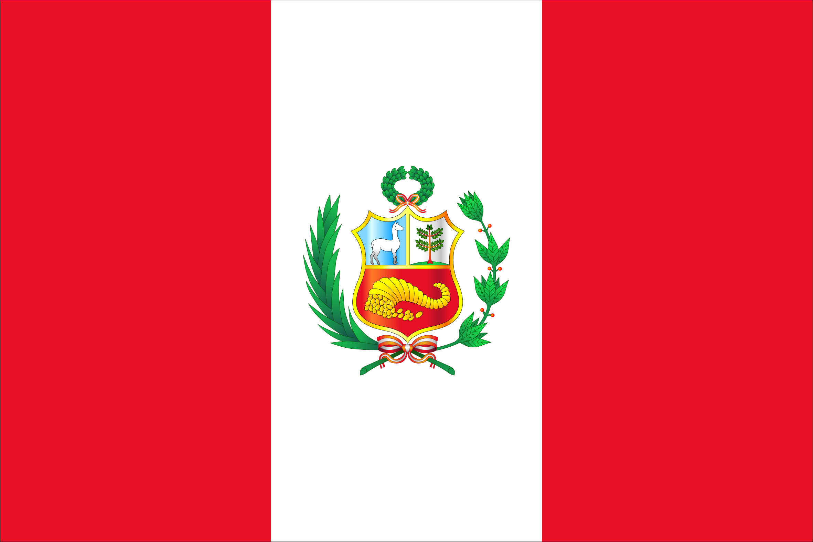
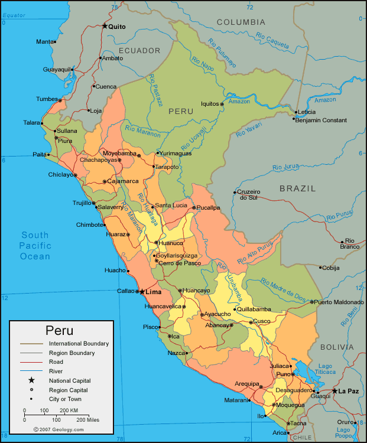

Peruvians are the citizens of the Republic of Peru or their descendants abroad. Peru is a multiethnic country formed by the combination of different groups over five centuries, so people in Peru usually treat their nationality as a citizenship rather than an ethnicity. Amerindians inhabited Peruvian territory for several millennia before Spanish Conquest in the 16th century; according to historian David N. Cook their population decreased from an estimated 8 million in the 1520s to around 600,000 in 1620 mainly because of infectious diseases. Spaniards and Africans arrived in large numbers under colonial rule, mixing widely with each other and with indigenous peoples. During the Republic, there has been a gradual immigration of European people. Japanese and Chinese arrived in large numbers at the end of nineteenth century.

